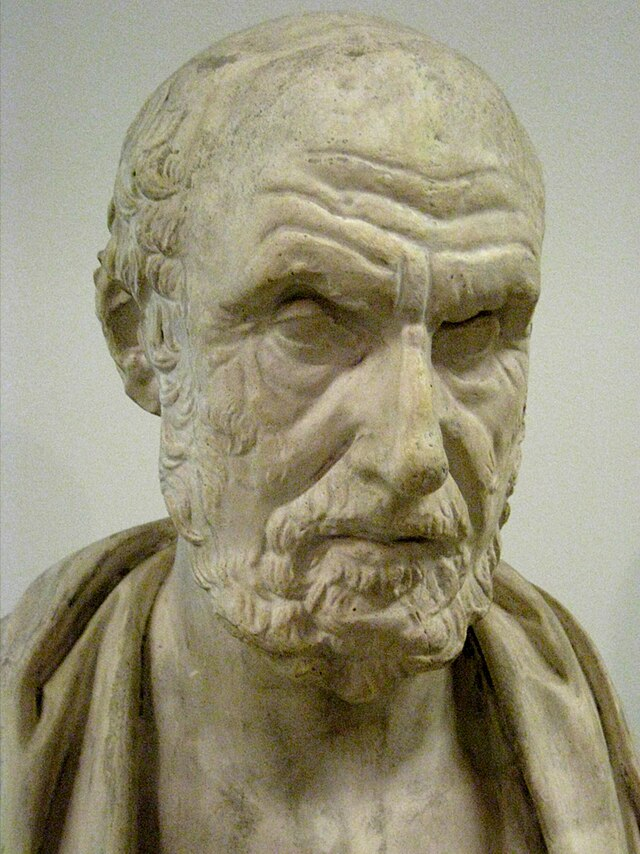

427 a. C. - 347 a. C.
Hipòcrates fou un metge grec del segle de Pèricles.
És considerat una de les figures més destacades de la història de la medicina i conegut com «el pare de la medicina»
en reconeixement dels seves contribucions duradores a aquesta disciplina com a fundador de l'escola que porta el seu nom.
